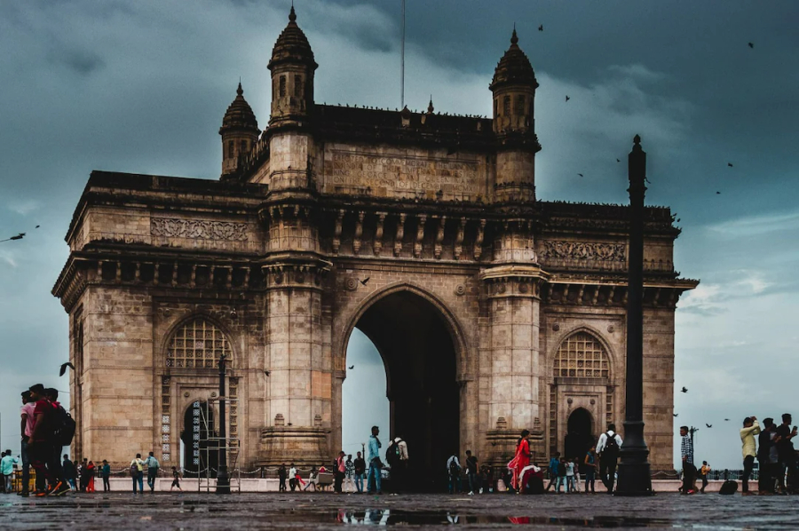
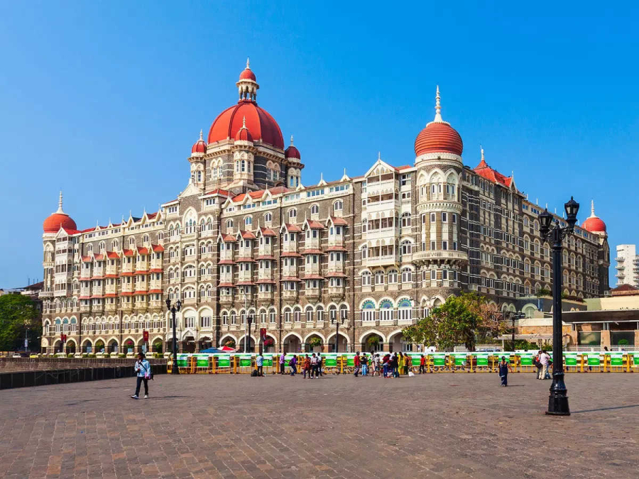
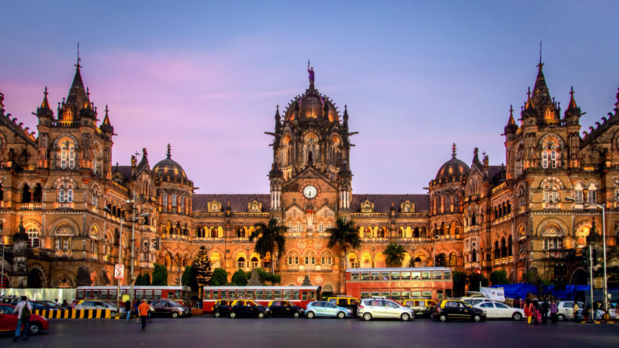
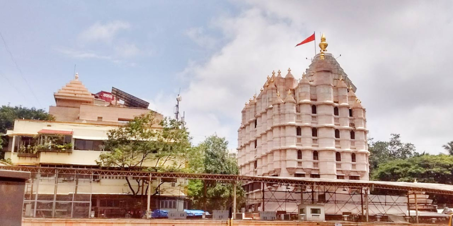
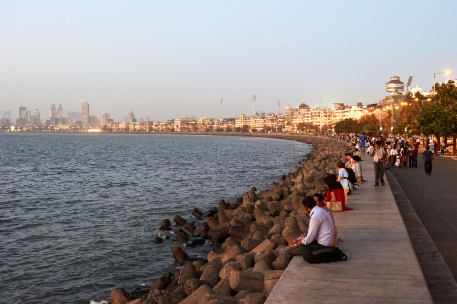
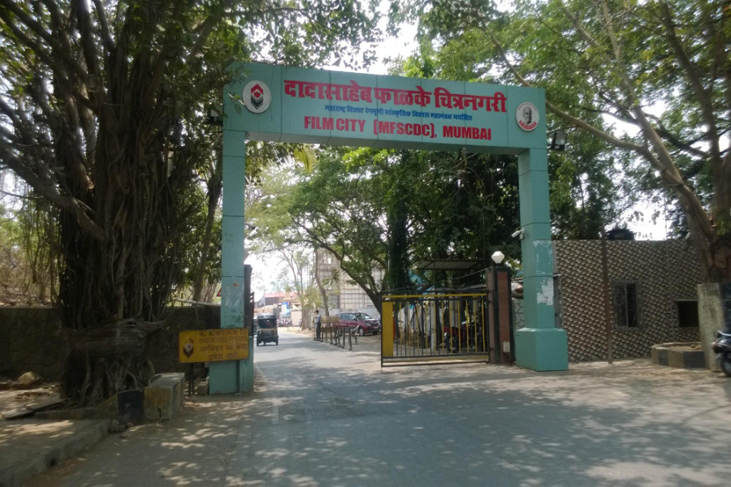
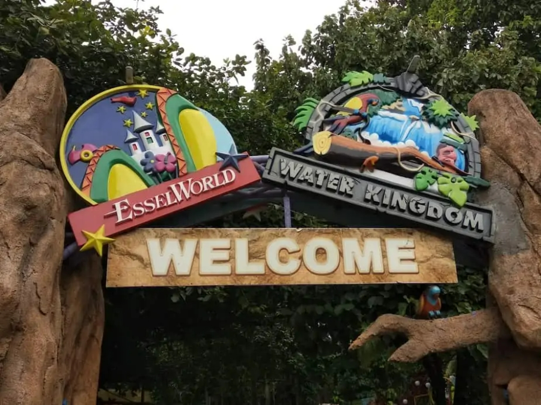
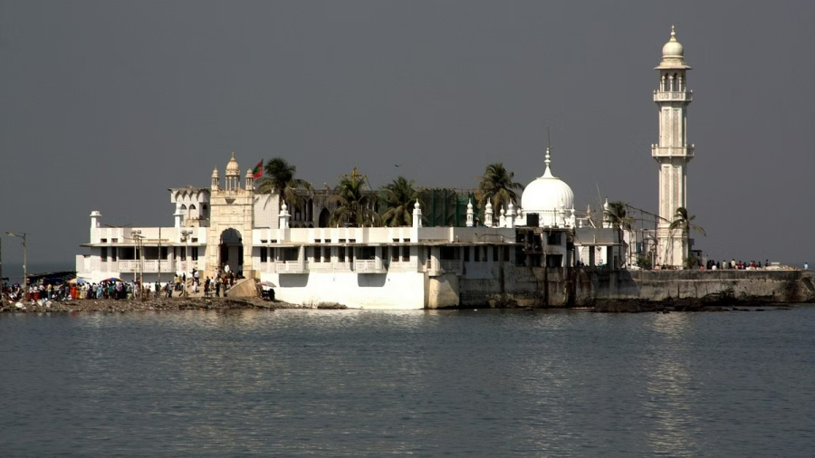

Explore Mumbai in more magnificant Way.
Mumbai, the city where dreams are made and fulfilled! From jam-packed railway platforms to the famous Dabbawalas, multi-millionaires to suburban slums, the dazzling Bollywood to the quintessential vada pav, the uniqueness of Mumbai city is beyond words. The best visiting places in Mumbai mirror the essence of these elements beautifully.
Chhatrapati Shivaji Maharaj Vastu Sangrahalaya
.jpg)
Chhatrapati Shivaji Maharaj Vastu Sangrahalaya, (CSMVS) originally named Prince of Wales Museum of Western India, is a museum in Mumbai (Bombay) which documents the history of India from prehistoric to modern times.The building is built in the Indo-Saracenic style of architecture, incorporating elements of other styles of architecture like the Mughal, Maratha and Jain. The museum building is surrounded by a garden of palm trees and formal flower beds. The museum houses approximately 50,000 exhibits of ancient Indian history as well as objects from foreign lands, categorised primarily into three sections: Art, Archaeology and Natural History. The museum houses Indus Valley civilization artefacts, and other relics from ancient India from the time of the Guptas, Mauryas, Chalukyas and Rashtrakuta.
Gateway Of India
The Gateway of India is an arch-monument built in the early 20th century in the city of Mumbai (Bombay), India. It was erected to commemorate the landing of King-Emperor George V, the first British monarch to visit India, in December 1911 at Strand Road near Wellington Fountain.
The Gateway stands at an angle, opposite to the Taj Mahal Palace and Tower Hotel, which was built in 1903.In the grounds of the gateway, opposite the monument, stands the statue of Shivaji, the Maratha warrior-hero who fought against the Mughal Empire to establish the Maratha Empire in the 17th century.The statue was unveiled on 26 January 1961 on the occasion of India's Republic Day.
Taj Mahal Palace Hotel
The Taj Mahal Palace is a heritage, five-star, luxury hotel in the Colaba area of Mumbai, Maharashtra, India, situated next to the Gateway of India. Built in the Indo-Saracenic style, it opened in 1903 as the Taj Mahal Hotel and has historically often been known simply as "The Taj". The hotel is named after the Taj Mahal, which is located in the city of Agra approximately 1,050 kilometres (650 mi) from Mumbai. It has been considered one of the finest hotels in the East since the time of the British Raj. The hotel was one of the main sites targeted in the 2008 Mumbai attacks.
Part of the Taj Hotels Resorts and Palaces, the hotel has 560 rooms and 44 suites and is considered the flagship property of the group; it employs 1,600 staff. The hotel is made up of two different structures: the Taj Mahal Palace and the Tower, which are historically and architecturally distinct from each other (the Taj Mahal Palace was built in 1903; the Tower was opened in 1972). The hotel has a long and distinguished history, having received many notable guests, from presidents to captains of industry and show business stars.
Chhatrapati Shivaji Maharaj Terminus
Chhatrapati Shivaji Maharaj Terminus ,Mumbai station code: CS MT (mainline)/ST (suburban), is a railway terminus and UNESCO World Heritage Site in Mumbai, Maharashtra, India..
The terminus was designed by a British born architectural engineer Frederick William Stevens from an initial design by Axel Haig, in an exuberant Italian Gothic style. Its construction began in 1878, in a location south of the old Bori Bunder railway station,and was completed in 1887, the year marking 50 years of Queen Victoria's rule.
Shree Siddhivinayak Temple
The Shri Siddhivinayak Ganapati Mandir is a Hindu temple dedicated to Ganesh. It is located in Prabhadevi, Mumbai, Maharashtra, India. It was originally built by Laxman Vithu and Deubai Patil on 19 November 1801. It is one of the richest temples in India.
Arguably the most popular & significant places of worship are the Shree Siddhivinayak Ganapati Mandir situated at Prabhadevi. This temple was first consecrated on Thursday 19th November 1801, a fact that is noted in government records. The temple then was a small structure housing the black stone idol of Shree Siddhivinayak, which was two and half feet wide. The outstanding feature of this deity is the tilt of the trunk to the right side. The idol has four hands (Chaturbhuj), which contains a lotus in upper right, a small axe in upper left, holy beads in the lower right and a bowl full of Modaks (a delicacy which is a perennial favorite with Shree Siddhivinayak) . Flanking the deity on both sides are Riddhi & Siddhi, goddesses signifying sanctity, fulfillment, prosperity and riches. Etched on the forehead of the deity is an eye, which resembles the third eye of Lord Shiva.
Juhu Beach
Juhu Beach is famous for its long and broad beach. There is a great place for tourists to sit, relax and enjoy the scenic view of the shoreline. It is also famous for its variety of street food and mouth-watering delicacies.
The Juhu Citizen Welfare Group is the outcome of many years of activism by Juhu residents who have been associated with other NGOs. It was formed in April 2002 (The Juhu Seatizen) and later formalised in August 2003 with its own monthly publication called The Juhu Citizen. Officially registered in March 2004, it now comprises voluntary members invited from NGOs in the K-West Municipal Ward of North West Mumbai.
Dadasaheb Phalke Film City
Film City; officially Dadasaheb Phalke Chitranagari is an integrated film studio complex situated near Sanjay Gandhi National Park in Goregaon East, Mumbai in India. It has several recording rooms, gardens, lakes, theatres and grounds that serve as the venue of many Bollywood and Marathi films. It was built in 1977 by the state government to provide facilities and concessions to the film industry. The plan for Film City was prepared and executed under the guidance of V. Shantaram.
Film City is situated in Goregaon (East) neighbourhood of Mumbai near Aarey colony. It is surrounded by jungle. Wild animals such as leopards have habitat in this jungle and sometimes it is also called as Film City jungle. Leopard sightings are normal in this area.
Sanjay Gandhi National Park

Sanjay Gandhi National Park, also known as SGNP, is an 87 km2 (34 sq mi) protected area in Mumbai, Maharashtra. It was established in 1969 with its headquarters situated at Borivali.The 2400-year-old Kanheri caves, sculpted by monks out of the rocky basaltic cliffs, lie within the park. The rich flora and fauna of the Sanjay Gandhi National Park attract more than 2 million visitors every year.
The park is forestland, with an estimated 800 types of mauve. This flower is native to the park and the surrounding regions, including Karnala, the Yeoor hills, Tungareshwar, and some parts of Goregaon's Film City. The park is also home to a small population of leopards.
EsselWorld
EsselWorld is an amusement park located in Gorai on Dharavi island, Mumbai. It covers an area of 65 acres along with Water Kingdom, and was opened to the public in 1989. Along with Adlabs Imagica, EsselWorld is one of the largest amusement parks in India.
Mumbai has several elements that represent its lively spirit. Be it Bollywood films or the serene beaches, Mumbai is a haven for those who like to live life to the fullest. However, the city is not alien to the metropolitan lifestyle with the daily hustle and bustle often making it monotonous for its residents. EsselWorld's exclusive theme park, Water Kingdom, has found its home in the bustling life of this city and offers a much sought after respite from the heat and hassle.
Haji Ali Dargah
The Haji Ali Dargah is a mosque and dargah or the monument of Pir Haji Ali Shah Bukhari located on an islet off the coast of Worli in the southern Mumbai. An exquisite example of Indo-Islamic Architecture, associated with legends about doomed lovers, the dargah contains the tomb of Haji Ali Shah Bukhari. Bukhari was a Sufi saint and a wealthy merchant from Uzbekistan. Near the heart of the city proper, the dargah is one of the most recognisable landmarks of Mumbai.
The Dargah is built on a tiny islet located 500 meters from the coast, in the middle of Worli Bay, in the vicinity of Worli. The edifice is a brilliant specimen of the Indo-Islamic style of architecture. The islet is linked to the city precinct of Mahalakshmi by a narrow causeway, which is nearly a kilometre (0.62 mile) long.
Video